<!DOCTYPE html>
<html lang="es">
<head>
    <meta charset="UTF-8">
    <meta name="viewport" content="width=device-width, initial-scale=1.0">
    <title>30 Dias Para Enamorarte</title>
    <style>
        body { font-family: Arial, sans-serif; margin: 20px; }
        #contenido { border: 1px solid #ccc; padding: 20px; min-height: 200px; }
        .my-soul-regular {
          font-family: "My Soul", cursive;
          font-weight: 400;
          font-style: normal;
        }
        .fondo{
            background: url("img/bg.jpg");
            background-position: center center; /* Centra la imagen horizontal y verticalmente */
            background-repeat: no-repeat; /* Evita que la imagen se repita */
            background-size: cover; /* Asegura que la imagen cubra todo el contenedor */
            background-attachment: fixed; 
        }
    </style>
       <link rel="shortcut icon" href="ico/favicon.png" type="image/x-icon">
    <link rel="preconnect" href="https://fonts.googleapis.com">
    <link rel="preconnect" href="https://fonts.gstatic.com" crossorigin>
    <link href="https://fonts.googleapis.com/css2?family=My+Soul&display=swap" rel="stylesheet">
    <link href="https://cdn.jsdelivr.net/npm/bootstrap@5.3.7/dist/css/bootstrap.min.css" rel="stylesheet" integrity="sha384-LN+7fdVzj6u52u30Kp6M/trliBMCMKTyK833zpbD+pXdCLuTusPj697FH4R/5mcr" crossorigin="anonymous">
</head>
<body>
    
   <div class="fondo p-2 container-fluid pt-5 pb-5">
    <div class=" bg-light center border border-danger w-100 mt-5 pt-5 pb-5 mb-5" id="contenido" >
        
    
   </div>
   </div>

    <script>
        document.addEventListener('DOMContentLoaded', () => {
            // 1. Obtener el ID de la URL
            const urlParams = new URLSearchParams(window.location.search);
            const idDesdeUrl = parseInt(urlParams.get('id')); // Convertir a número entero

            // 2. Obtener el día actual
            const fechaActual = new Date();
            const diaActual = fechaActual.getDate(); // Devuelve el día del mes (1-31)

            const contenidoDiv = document.getElementById('contenido');

            // 3. Validar y mostrar contenido
            if (diaActual >= 16 && idDesdeUrl <= diaActual) {
                // Si el ID de la URL coincide con el día actual
                if (idDesdeUrl === 16) {
                    contenidoDiv.innerHTML = `
                    <h1 class="text-center pb-2"><p class="my-soul-regular "> 30 Dias Para Enamorarte</p></h1>
                    <h3 class="text-center pb-2">El comienzo de un amor bonito ❤</h3>
                    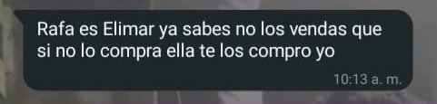
            <div class="row">
                <div class="col-sm-12 col-md-6 text-sm-start pb-2">Comencé con este día por que para ambos tiene un gran significado, el primer día en que hablamos. Jamás pensé que de algo tan sencillo como puede ser un mensaje, podría obtener una relación tan bonita como la que tengo contigo. Tampoco pensé que en tan poco tiempo podría amar tanto a una persona, es que es imposible contigo, eres tan hermosa, inteligente, sabia, de un corazón de pollito, sincera, te preocupas por los demás, tan excelente madre, eres demasiado pero demasiado especial.</div>
                
                
                <br /><br />
                <div class="col-sm-12 col-md-6 text-sm-start pb-2">Honestamente durante mucho tiempo pensé que no podría amar a nadie más con tanta intensidad, pero luego te conocí a ti, que, con tu sonrisa, esa preciosa manera de ser y tu mirada que es mi mas hermoso paisaje me terminaría enamorando demasiado. Me has hecho crecer, me has hecho confiar en mi mismo, me has hecho entender que tenemos la capacidad y fuerza para hacer muchas cosas y lo mejor de todo es que en las que no puedo me has demostrado que cuento con tu apoyo, no cambiaria eso por nada en el mundo, pues tu y solo tu me has sabido entender y amar.</div><br /><br />
                
                <div class="col-sm-12 col-md-6 text-sm-start pb-2">Cada vez que pienso en ti, siento bonito en mi corazón, pues solo contigo se siente seguro. Recuerdo que una vez te dije que lo cuidaras, pues se encontraba muy lastimado, pero la verdad es que contigo ha vuelto a amar, pienso en ti y no me arrepiento de nada, de entregarte mi corazón, mis pensamientos, mis caricias, de verdad, que este presente sea un detalle de lo que tu me has hecho cambiar, y mucho amor mío. </div><br /><br />
                <div class="col-sm-12 col-md-6 text-sm-start pb-2">Siempre recordare este día, el tenerte, el quererte, has marcado una huella en mi corazón tan pero tan profunda, que no saldrás de donde estas, nada ni nadie, solo el mismo Dios o tu pueden alejarme de ti, te amo mucho Elimar y se que siempre lo digo, pero quiero una vida contigo, pero bueno, no diré mas es el primer día, dejare para otros días, solo quiero que sepas lo mucho que te amo y que anhelo compartir mi vida. </div>
            </div>
                `;
                }
                if (idDesdeUrl === 17) {
                    contenidoDiv.innerHTML = `<h1 class="text-center pb-2"><p class="my-soul-regular "> 30 Dias Para Enamorarte</p></h1>
                    <h3 class="text-center pb-2">Un amanecer hermoso 🌄</h3>
                    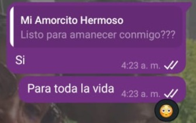
            <div class="row">
                <div class="col-sm-12 col-md-6 text-sm-start pb-2">Este día fue uno de los más hermosos días, el día que subimos a “La Pantalla”, debo admitir que estaba muy nervioso, como sabes no he salido a muchos lugares, además, los temas con el trabajo, mi familia, mi vida en general, me tenían agobiado, pero llegaste tú, para cambiar mis días grises en días llenos de luz. </div>
                
                <div class="col-sm-12 col-md-6 text-sm-start pb-2">Amo profundamente cuando haces eso, cuando en un mal día haces cambiar todo lo que me atormenta en sonrisas.</div>

                <div class="col-sm-12 col-md-6 text-sm-start pb-2">Ese día, en este mensaje que te envié, aunque pareció un simple mensaje para mí fue el deseo más profundo de mi corazón, despertar cada mañana con esos preciosos ojos tuyos mirándome, junto con esa sonrisa que me derrite se ha convertido en mi más recurrente e importante deseo, anhelo mucho tener una vida junto a ti.</div>
                
                <div class="col-sm-12 col-md-6 text-sm-start pb-2">Ese día la pasé genial, cada momento que pase contigo, tener presente esa preciosa vista frente a mí fue fenomenal, y no, no hablo del horizonte ni de la vista de la pantalla, hablo de tu mirada observando y admirando todo cuan niño pequeño mira algo con gran anhelo. Esa vista, ese hermoso momento, siempre vivirá en mi mente. Honestamente deseo con todo mi corazón pasar más momentos así contigo, te amo mucho Elimar.</div>

                <div id="carouselExampleIndicators" class="carousel slide col-sm-12 col-md-6 text-sm-start pb-1 pt-3" data-bs-ride="carousel">
                    <div class="carousel-indicators">
                        <button type="button" data-bs-target="#carouselExampleIndicators" data-bs-slide-to="0" class="active" aria-current="true" aria-label="Slide 1"></button>
                        <button type="button" data-bs-target="#carouselExampleIndicators" data-bs-slide-to="1" aria-label="Slide 2"></button>
                        <button type="button" data-bs-target="#carouselExampleIndicators" data-bs-slide-to="2" aria-label="Slide 3"></button>
                        <button type="button" data-bs-target="#carouselExampleIndicators" data-bs-slide-to="3" aria-label="Slide 3"></button>
                        <button type="button" data-bs-target="#carouselExampleIndicators" data-bs-slide-to="4" aria-label="Slide 3"></button>
                        <button type="button" data-bs-target="#carouselExampleIndicators" data-bs-slide-to="5" aria-label="Slide 3"></button>
                        <button type="button" data-bs-target="#carouselExampleIndicators" data-bs-slide-to="6" aria-label="Slide 3"></button>
                        <button type="button" data-bs-target="#carouselExampleIndicators" data-bs-slide-to="7" aria-label="Slide 3"></button>
                    </div>
                    <div class="carousel-inner">
                        <div class="carousel-item active">
                        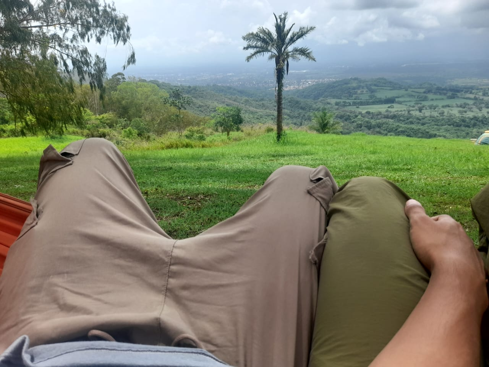
                        </div>
                        <div class="carousel-item">
                        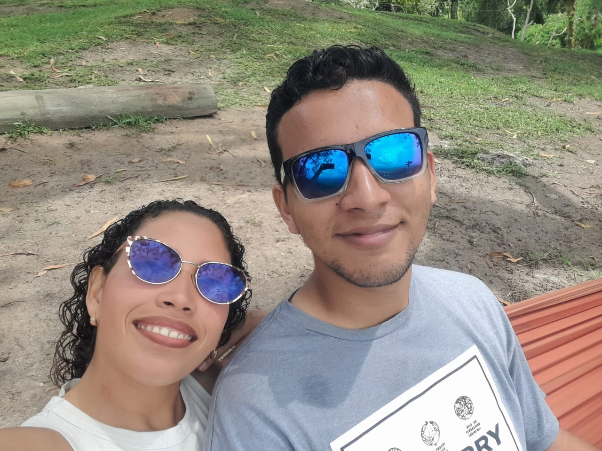
                        </div>
                        <div class="carousel-item">
                        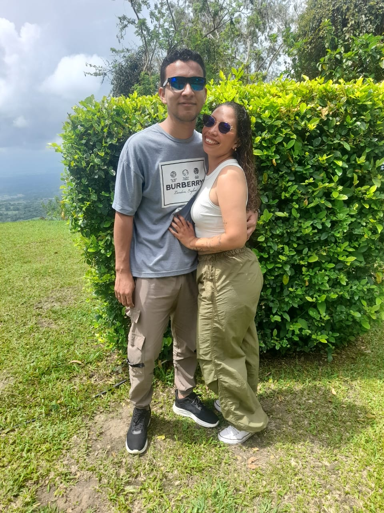
                        </div>
                        <div class="carousel-item">
                        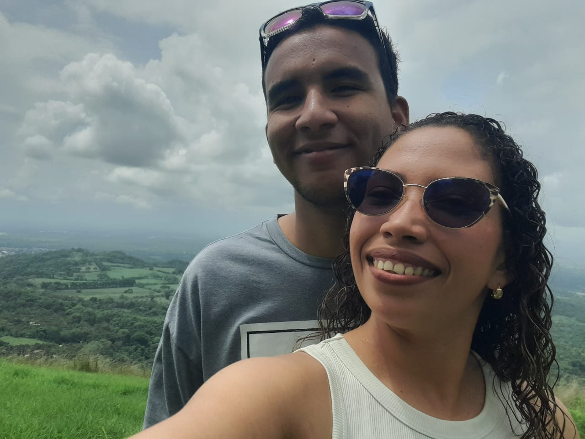
                        </div>
                        <div class="carousel-item">
                        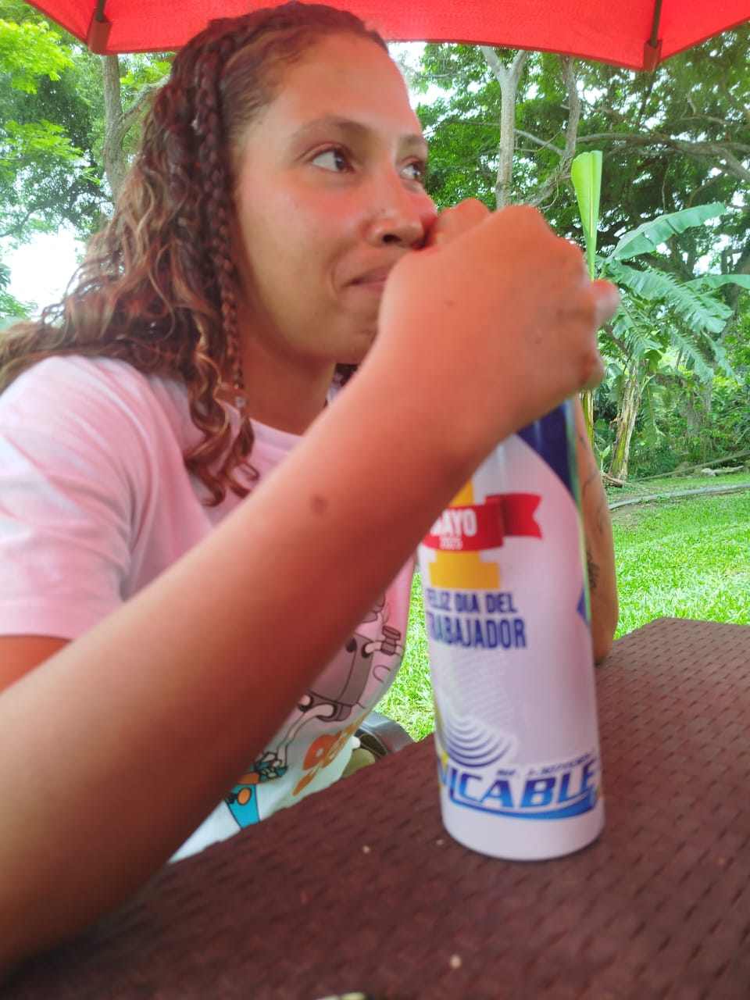
                        </div>
                        <div class="carousel-item">
                        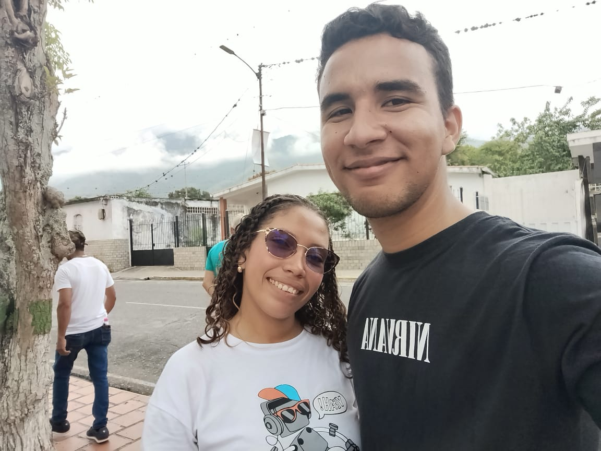
                        </div>
                        <div class="carousel-item">
                        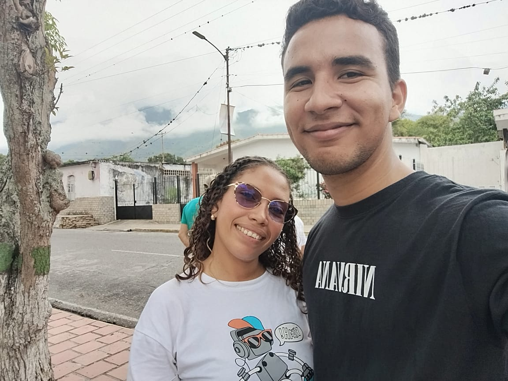
                        </div>
                        <div class="carousel-item">
                        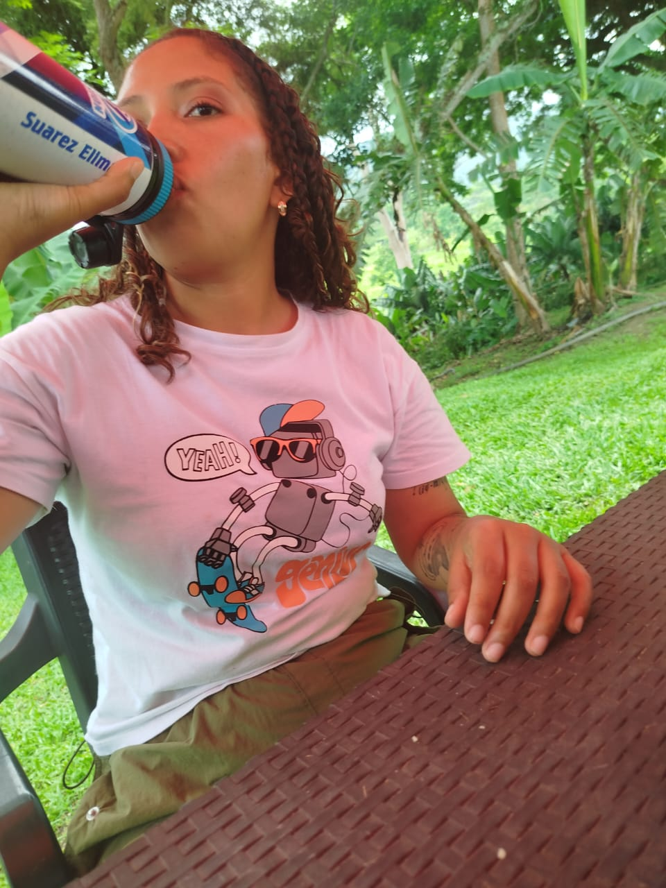
                        </div>
                    </div>
                    <button class="carousel-control-prev" type="button" data-bs-target="#carouselExampleIndicators" data-bs-slide="prev">
                        <span class="carousel-control-prev-icon" aria-hidden="true"></span>
                        <span class="visually-hidden">Anterior</span>
                    </button>
                    <button class="carousel-control-next" type="button" data-bs-target="#carouselExampleIndicators" data-bs-slide="next">
                        <span class="carousel-control-next-icon" aria-hidden="true"></span>
                        <span class="visually-hidden">Proximo</span>
                    </button>
                    </div>
            </div>
             <div class="col-sm-12 col-md-6 text-sm-start pb-2">Luego, en cuanto cayó la noche, estuve más nervioso aún, tanto tiempo sin estar con alguien, tantas malas experiencias, tantas cosas que pasaban por mi mente, me hacían dudar de si sabría o no hacerte el amor, sin embargo, tu mirada, tu amor, tu deseo me dieron la confianza de pasar una de mis noches más hermosas junto a ti.</div>
             <div class="col-sm-12 col-md-6 text-sm-start pb-2">Recuerdo la pasión de la noche, nuestros cuerpos formando parte vital el uno del otro, el vapor y el calor del momento, la fragancia de nuestro sudor formando parte el uno del otro con cada beso. Aun cuando no podíamos movernos bien por la incomodidad de la carpa y por la gente alrededor, para mi es y siempre será una noche inolvidable, cuando en lo alto de aquella montaña, ante el lienzo de un cielo pintado y rebosante de estrellas te hice mía, aquella noche fue testigo de cómo nos hicimos parte, el uno del otro. </div>
             <div class="col-sm-12 col-md-6 text-sm-start pb-2">Días como este me hacen anhelar estar cada día junto a ti. Deseo más que nada pasar mis días enteros junto a ti. Por cierto esta fue mi imagen favorita, tu look que más me encanta es verte sonreir. Te amo.</div>

             
                `;
                }
                if ( idDesdeUrl === 18 ) {
                    contenidoDiv.innerHTML = `
                             <h1 class="text-center pb-2"><p class="my-soul-regular "> 30 Dias Para Enamorarte</p></h1>
                            <h3 class="text-center pb-2">Sentirme de nuevo como un niño 👦</h3>
                            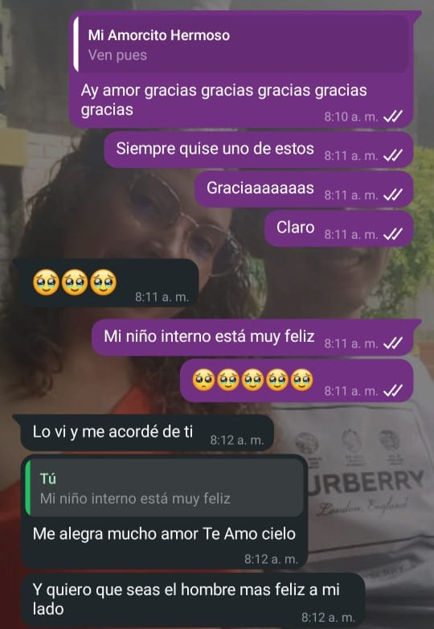
                        <div class="row">
                        <div class="col-sm-12 col-md-6 text-sm-start pb-2">Este día para mí fue muy importante, mi niño interior contigo se siente en paz, pero este día particularmente se sintió muy feliz, tal vez el detalle que me diste para muchos no les sea importante, pero a mí me encantó, fui demasiado feliz, el hecho de que me dieras este regalo me hizo saber que realmente me quieres, me entiendes y me escuchas. La verdad no todos hacen eso y me encanta completamente que lo hagas.</div>
                        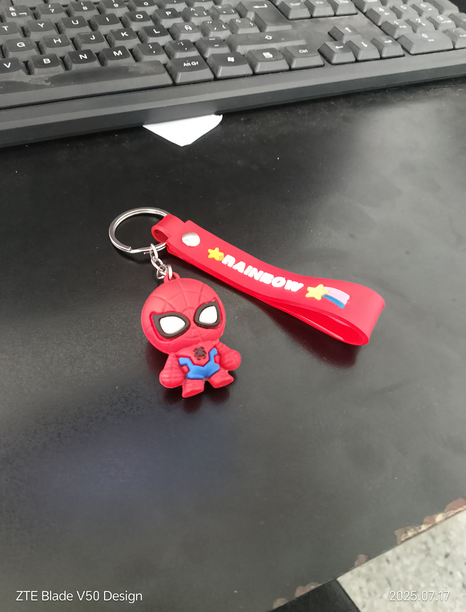

                        <div class="col-sm-12 col-md-6 text-sm-start pb-2">En pocas palabras, este llavero es mis medias de abejitas.</div>

                        <div class="col-sm-12 col-md-6 text-sm-start pb-2">Cuando estoy con alguien no me gusta hablar de mis relaciones pasadas porque pienso que estuve con ellas por algo y pienso que el pasado es el pasado, me enfoco más en lo que vivo con la nueva persona a mi lado, sin embargo, en relaciones pasadas me decían que madurara, que cambiara, que no podía tener esos gustos de niños. Eso personalmente me llena de muchas inseguridades y miedos. Pero tú, tú supiste que me gustaba y lo conseguiste para mí, eso lo valoro con todo mi corazón, me encanta ser yo mismo, pero más me encanta que te guste siendo yo mismo.</div>
                        
                        <div class="col-sm-12 col-md-6 text-sm-start pb-2">Me la paso todo el tiempo diciéndole a mi niño interior que esa persona que tanto anhelo que llegara y que tanto necesito llegó y llegó para quedarse. Te amo mucho Elimar, cada vez que hablo contigo amo como desnudo mi alma ante ti, como te cuento lo más íntimo de mis pensamientos, pero amo cuando tú escudriñas sin saberlo lo más íntimo en mí.</div>

                        <div class="col-sm-12 col-md-6 text-sm-start pb-2">Quiero a alguien en mi vida como tú, quiero a alguien que sepa cómo hacerme un mejor hombre sin cambiar mi esencia, que sepa corregirme sin herirme, que me enseñe sin ofender mi persona, te quiero a ti en mi vida y quiero que sepas, que todo lo que me des o hagas por mí de pronto puede que no te lo parezca, pero estas haciendo feliz a un niño que espero un regalo que nunca llegó, que espero una sorpresa que nunca se hizo, que espero unas felicitaciones que fueron reemplazadas por un “es tu deber”.</div>

                        <div class="col-sm-12 col-md-6 text-sm-start pb-2">Te amo y siempre que hagas mi niño interior feliz, seré especial contigo. Y te amaré todo lo que me ames</div>


                        </div>
                         `;
                }
                if ( idDesdeUrl === 19 ) {
                    contenidoDiv.innerHTML = `
                    <h1 class="text-center pb-2"><p class="my-soul-regular "> 30 Dias Para Enamorarte</p></h1>
                    <h3 class="text-center pb-2">La promesa no cumplida</h3>
                    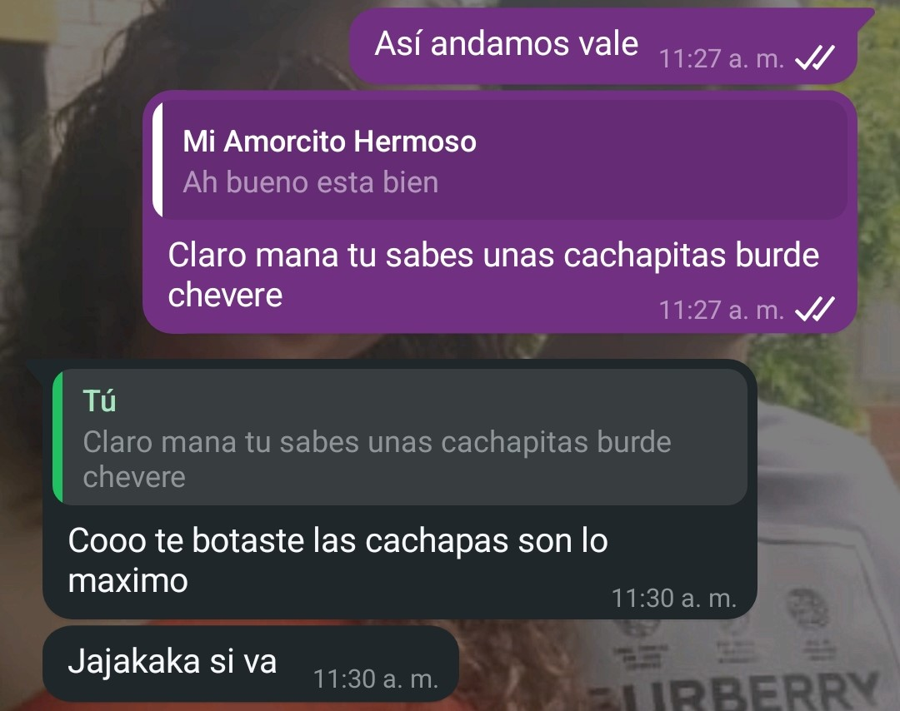
                    <div class="col-sm-12 col-md-6 text-sm-start pb-2">Este dia te hice una promesa, si, fue cuando comenzamos a hablar y a pasado tiempo de eso, pero no quiero dejar promesas sin cumplir, ni cosas al aire, quiero representar con esto que cada promesa que haga, que cada cosa que diga la pueda cumplir sin problemas por que mereces acción, ya muchas promesas has tenido.</div>
                    <div class="col-sm-12 col-md-6 text-sm-start pb-2">No quiero justificarme, pero el problema conmigo es que como sabes las cosas se me olvidan constantemente, no sé de verdad ni como me gradue jajaja. Pero hasta eso has cambiado en mi, mi falta de compromiso es muy evidente pero me has hecho pensar de manera diferente, ya quiero accionar cada que te prometa algo y que seas la razón de mi responsabilidad.</div>
                    <div class="col-sm-12 col-md-6 text-sm-start pb-2">Dijimos que comeríamos arroz chino y lo hicimos, más hoy toca comer cachapas 🤤cada cosa que dijimos que haríamos quiero hacerlas contigo, y esta carta es un fiel recordatorio de ello, se que hay muchas otras cosas que tal vez he dicho que aún no hemos hecho, pero quiero hacer todo contigo, quiero cada momento junto a ti y compartir todas las experiencias que podamos mi amor, por que cuando te digo que quiero pasar toda mi vida junto a ti, me refiero a todo, los dias felices, los tristes, las verdes y las maduras, todo, amor mio, quiero que sea junto a ti.</div>
                    <div class="col-sm-12 col-md-6 text-sm-start pb-2">Elimar quiero que seas tu mi esposa, quiero que seas tu la mujer de mi vida y no descansaré hasta que pueda ese sueño hacerse realidad, te amo.</div>
                    <div class="col-sm-12 col-md-6 text-sm-start pb-2">Así que hoy comeremos cachapas, muy probablemente el yo del presente ya te dijo que íbamos a salir, es que soy muy impaciente jajajaja. Si no puedes, tienes otros planes o estás muy cansada avisame y lo podemos reagendar, también si prefieres ir a otro sitio no tengo problema, solo quiero estar contigo mi amor y pasar cada instante junto a ti vida mía.</div>
                    <div class="col-sm-12 col-md-6 text-sm-start pb-2 bold">TE AMO ELIMAR.</div>
                    `;
                }
                 if ( idDesdeUrl === 19 ) {
                    contenidoDiv.innerHTML = `
                    <h1 class="text-center pb-2"><p class="my-soul-regular "> 30 Dias Para Enamorarte</p></h1>
                    <h3 class="text-center pb-2">La calma después de la tormenta</h3>
                    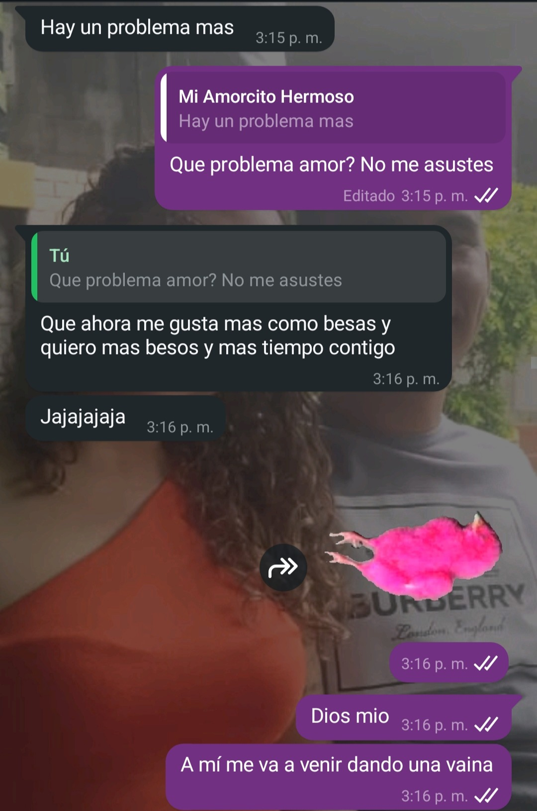
                    <div class="col-sm-12 col-md-6 text-sm-start pb-2">Este día, debo admitir, para mi fue muy impresionante. El día de nuestra primera pelea. Quizás te preguntes ¿Por que en una carta romántica tomó este día?, la verdad esta, nuestra primera pelea, me dio mucha impresión por cómo lo manejamos, anteriormente cuando discutía con mis anteriores parejas, era algo demasiado inmaduro, admito que no soy fácil de manejar en ocasiones, pero ese dia me demostraste que hasta en las discusiones eres diferente y que no quieres dejarme ir. </div>
                    <div class="col-sm-12 col-md-6 text-sm-start pb-2">Como olvidar ese momento donde se me iba a salir el corazón pensando que te irías de mi vida, por fuera haciéndome el duro pero por dentro sufriendo al imaginar que ya no te tendría a mi lado.</div>
                    <div class="col-sm-12 col-md-6 text-sm-start pb-2">No mostraste debilidad, demostraste comprensión. Lo que más me impresionó es que tu entendiste que ambos somos imperfectos y que hablando podemos solucionar las cosas.</div>
                    <div class="col-sm-12 col-md-6 text-sm-start pb-2">Tal vez no tenga mucha experiencia viviendo con alguien, pero he entendido que cuando hablas con el corazón y hay comprensión de ambas partes, se solucionaran los problemas, ambos hemos pasado por malas relaciones, ahora nos toca amarnos con todo lo que tenemos. </div>
                    <div class="col-sm-12 col-md-6 text-sm-start pb-2">Si paso un momento sin ti, me siento mal, me he vuelto adicto a tus besos, dependiente de tus abrazos, siento que respiro cuando tu me hablas, eres demasiado especial para mi, las peleas sucederán, las discusiones estarán, pero te demostrare que realmente quiero estar contigo luchando por lo nuestro.</div>
                    <div class="col-sm-12 col-md-6 text-sm-start pb-2">Este dia es un recordatorio de que no hay problema ni discusión que no podamos enfrentar, siempre y cuando los dos queramos continuar.</div>
                    <div class="col-sm-12 col-md-6 text-sm-start pb-2 bold">Te amo y realmente anhelo pasar el resto de mi vida contigo, porque sé  que daremos el todo el uno por el otro</div>

                    `;
                }
            } 
            else {
                // Si no coincide o el ID no está presente
                contenidoDiv.innerHTML = `
                
                    <div class="text-center mb-3">
                        <h1 class="text-center"><p class="my-soul-regular "> 30 Dias Para Enamorarte</p></h1>
                        <h3>Chama, pero es que tu sinceramente te pasas, la curiosidad te mata</h3>
                        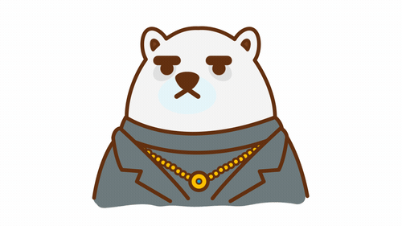
                        <h3>Por favor deja el chisme, para eso estoy yo para que chismees conmigo</h3>
                    </div> 
                `;
            }
        });
    </script>
    <script src="https://cdn.jsdelivr.net/npm/bootstrap@5.3.7/dist/js/bootstrap.bundle.min.js" integrity="sha384-ndDqU0Gzau9qJ1lfW4pNLlhNTkCfHzAVBReH9diLvGRem5+R9g2FzA8ZGN954O5Q" crossorigin="anonymous"></script>
</body>
</html>
